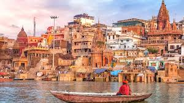
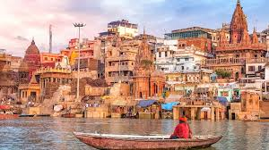

The Taj Mahal is a famous white marble monument located in Agra, India. It was built by the Mughal emperor Shah Jahan in memory of his wife Mumtaz Mahal. Construction began in 1632 and took about 22 years to complete. The monument is known for its beautiful architecture and symmetrical design. It is surrounded by gardens, a reflecting pool, and intricate carvings. The Taj Mahal is recognized as a UNESCO World Heritage Site and a symbol of love.The Taj Mahal is a stunning white marble mausoleum situated on the banks of the Yamuna River in Agra, India. It was commissioned by Mughal emperor Shah Jahan in 1632 in loving memory of his wife Mumtaz Mahal. The monument combines elements of Islamic, Persian, and Indian architectural styles. Precious and semi-precious stones were used to decorate its walls with intricate inlay work. The Taj Mahal changes its color slightly depending on sunlight and moonlight. It attracts millions of visitors every year and is one of the Seven Wonders of the World.
Varanasi is one of the oldest continuously inhabited cities in the world, located on the banks of the River Ganga in Uttar Pradesh, India. It is considered the spiritual capital of India and is sacred to Hindus. The city is famous for its ghats, where people perform rituals and prayers along the river. Varanasi is an important center for learning, music, and classical arts. The Kashi Vishwanath Temple, dedicated to Lord Shiva, is one of its most revered landmarks. The city is also known for its silk sarees, narrow lanes, and rich cultural heritage.Varanasi is one of the oldest living cities in the world, situated on the banks of the holy River Ganga in Uttar Pradesh, India. It is also known as Kashi and Banaras and holds great religious importance in Hinduism. Many believe that attaining salvation (moksha) is possible by dying in Varanasi. The city is famous for its ghats, especially Dashashwamedh Ghat, where the grand Ganga Aarti is performed daily. Varanasi is a major center for Sanskrit learning, spirituality, and classical music. It is also renowned for Banarasi silk sarees, traditional handicrafts, and vibrant street life.
Ayodhya is a historic city located on the banks of the Sarayu River in Uttar Pradesh, India. It is regarded as the birthplace of Lord Rama and holds great significance in Hindu mythology. Ayodhya is one of the seven sacred cities (Sapta Puri) believed to grant spiritual liberation. The city is closely associated with the epic *Ramayana* and ancient Indian history. Ayodhya is home to many temples and religious sites, attracting pilgrims from all over the country. The Ram Mandir has made Ayodhya an important spiritual and cultural center in modern India. Ayodhya is an ancient city located on the banks of the Sarayu River in Uttar Pradesh, India. It is believed to be the birthplace of Lord Rama and is closely associated with the epic *Ramayana*. Ayodhya is one of the seven sacred cities (Sapta Puri) in Hinduism. The city has been an important center of religion, culture, and learning since ancient times. It is home to several temples, ghats, and historical monuments visited by pilgrims year-round. Ayodhya has also played a significant role in Indian history during Buddhist and Jain periods. Today, it is developing as a major spiritual tourism destination in India.